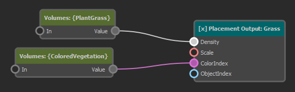
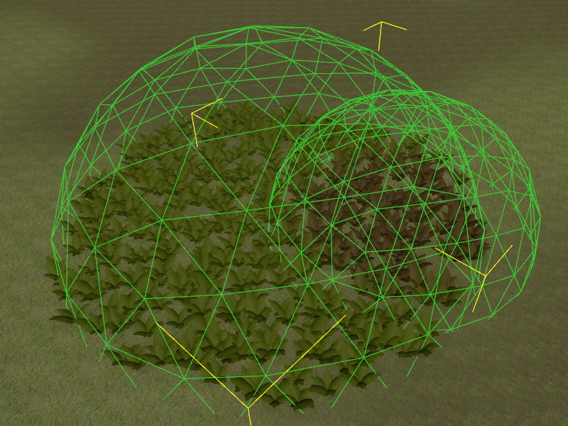
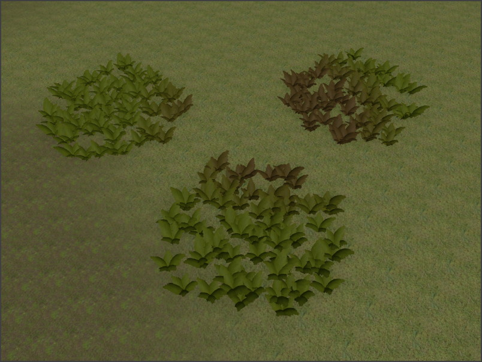

ProcGen Graph Modifier Nodes
The output that the rules in a ProcGen graph produce, mostly depends on the terrain on which it is applied. Flat plains, steep cliffs and different surface types determine where which kind of vegetation grows.
However, often it is necessary to have some more control. By itself, the rules rarely create a clearing in a forest, and even if they do, it is hard to control where it is and how it looks like. The procedural nature of the system takes away control from the level designers.
To give this control back, without reintroducing the need for lots of manual work, the system allows you to place modifiers in the world, which affect the rules as you like. The modifiers typically are simple volumes such as spheres and boxes. They are tagged to differentiate what they represent. The rule graph can evaluate whether a location is influenced by certain volumes and change the output accordingly.
What the system does with this additional information is up to the person who sets up the rules. You can create volumes that modify the density of specific plants down to zero, meaning that it suppresses their placement. Or a volume may affect the color, size or other parameter.
Example
The following graph has a single placement output node, which places a single object type. However, both the Density and the ColorIndex inputs are connected to a modifier node. The default value for each input is configured on those nodes. In this case, the default density is 0, meaning that without an extra modifier volume in the scene, this type of plant won't be placed, at all. The placement node also has a color gradient from which the color of each plant is selected. The default value makes the plant green, but by providing a different ColorIndex, it can be shifted towards red/brown.

The image below shows how we can use this. There are two sphere volumes in our scene. One is tagged to be picked up by the node that feeds into the Density input, the other is tagged to be picked up by the ColorIndex modifier node.

The sphere on the left overrides the Density to be 1 and thus inside its area of influence, vegetation appears. The sphere on the right overrides the ColorIndex towards red/brown, thus plants inside its volume have a different color.
Note that the rules in the graph are not tied to specific volumes in a scene. Rather the modifier nodes use tags to filter which volumes are considered as their inputs. Thus you can use as many volumes as you like to locally control the rule output.
In the image below, the same rules are applied, but now there are three spheres in the scene that override Density and another one for color:

ApplyVolumes Node
The ApplyVolumes node looks up the scene for ProcGen volume components at each location where a plant shall be placed. It uses tags to filter volumes. Thus you need to set up different tags to have volumes affect the placement rules in different ways.
The node then takes its own value (either provided through the In pin or the InputValue property) and modifies it with each value provided by local volumes, according to their BlendMode setting. If multiple volumes are found for the same location, their SortOrder and their overall size are used to decide in which order their values are applied. This way a smaller volume typically takes precedence over larger volumes, but using the SortOrder you can force a desired priority.
If a volume additionally uses an image (such as the volume image component) to provide detailed data, the ImageVolumeMode is used to determine either which channel (red, green, blue or alpha) should be considered, or whether a specific color represents whether the volume should be applied. Choosing a channel means that you can only control four different things, but you have smooth values ([0; 1] range) to work with. So a channel could control how strongly to tint a color or how think a density should be.
When using a reference color instead, you can have many more inputs, but each one can only be on or off and they can't overlap. This is useful to tag areas of a type. So for instance brown could represent "swamps", green "forests", blue "water", grey "roads" and so on. Such general information about the area type can then be used to decide which types of plants to place.
Node Properties
IncludeTags: These tags control which volumes are considered. If your volumes seem to have no effect, make sure this tag is set correctly both on the node and on the game object to which the volume component is attached. Set up different tags to differentiate what volume shall affect what parameter.InputValue: If no value is provided through theIninput pin, this is the default value to use. The final outputValueis determined by taking this value and combining it with all the values of the volumes, using their individualBlendMode. TheSortOrderon the volumes controls in which order the values are combined. If the sort order values are equal, larger volumes are applied first and then smaller volumes. This way a more local volume have 'the last word'.ImageVolumeMode: If a location is modified by an image volume, this mode specifies how the image data is used.ReferenceColor: The color in the image is compared withRefColor. If the colors roughly match, the volume takes effect, otherwise it is as if the volume wasn't present, at all.Red/Green/Blue/Alpha Channel: The volume always has an effect, but itsValueis additionally multiplied with the value from the chosen channel of the image.
RefColor: IfImageVolumeModeis set toReferenceColor, this volume only has an effect, if the image at the sampled location (roughly) matches this color.